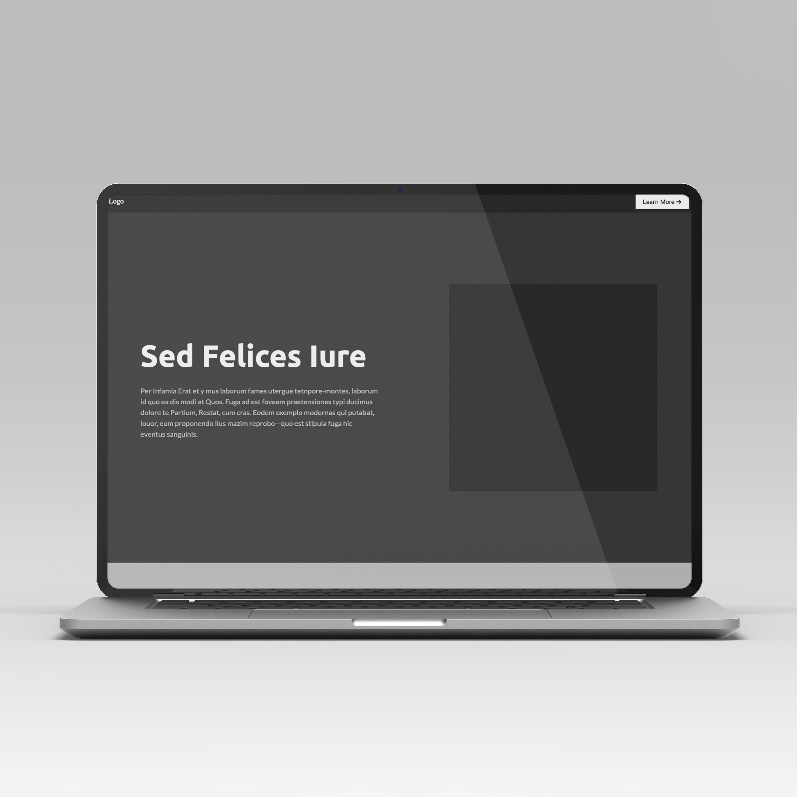

What have I learned?
I have learned about some key rules to follow when making font pairings, and font hierarchy. I have also learned about some nice tools that makes it easier to make a good font hierarchy.
Tobias Roland
This assignment focuses on creating a mockup landing page design using only fonts and gray scales. The first part involves implementing a font hierarchy with one or two fonts, and applying it to the web site. The font sizes should be set in rem, and other factors like line-height, margins, and paddings should be considered. For inspiration, students can use landing pages from Land-book, and can copy their use of fonts. The second part of the assignment involves improving the UI components, paying attention to guidelines for designing UI components and CSS techniques. Finally, the UI cards should be laid out with CSS flex and subtle borders, rounded corners, and shadows should be added.
I have learned about some key rules to follow when making font pairings, and font hierarchy. I have also learned about some nice tools that makes it easier to make a good font hierarchy.